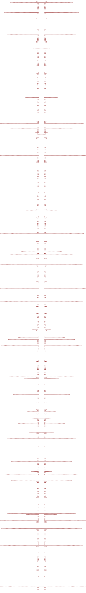

|
>Date: Tue, 29 May 2001 01:05:25 +1100 |
.
|
>Date:
Tue, 29 May 2001 14:29:27 +1100 >To: nettime, newmedia >From: "][mez][" <netwurker@hotkey.net.au> >Subject: _Realigning of a Post-Os.te][xtu][al Entity [Condensation Instruction]_ > _Realigning of a Post-O.s][cientific][teal Entity [Condensation (GOTO:+) N.struction]_ 1. Di][ag][gressive Rea][der][ttachment (GOTO:++) A Fusible Fiction Ligature can be used in order to substantiate the dampening of all Flushing Actions. The ba][r][th][e][s are drenched with P][e][lastmica(TM*). Seve.r][e][al of the Header Tronics(TM*) pulse within the X.pansivity Verbotens(TM*). A lone Prose F][ractured][uselage floats into full-blown Circuit ][e][Motion. 2. Fluid Sy.phon][etic][ Ig][k][nit.ion (GOTO:+++) CeRAMica(TM*) activates the Authorial Abasia Tripwire. Duel Acton Roguers(TM*) melt Subverbals to the newly-pored E-Verbotens. A Shiverb(TM*) cooling system blows down the Crystaligns(TM*). Client-S][uic][ide Trembling begins during the Syphon Buzz. 3. Re][v][amplified Co-de.magoguery (GOTO:++++) Corpus Circulation brings fresh metronymics. The W.arnicas (TM*) bleat in Undone Undulatory Theory rhythmicity. Hydrokinetically driven holdpoints ooze a foregroundophobic substance known as ][jean][ Genet.icosa(TM*). Disengagement becomes impossible. _ _ _ _________________ ______ _ __ _ _ _.__.__. + Condensation Instruction is the process where dream i][mages][deas cojoin in2 a single symbolic nodepoint & r subsequently x.tractable from a text//may also indicate a change in a ][wo][manifest reader/state functioning// ++ Digressive Reader Attachment may indicate narrative/collusive mass hysterical meaning adherence. * Tyrellic Models [modemathically oriented] r subsets of an m.mergent strand of artifically n.duced n.tities designed 2 initially mimic the standard replication & procedural nature of regular scientific/textual statements. these n.tities r then co][at][ded with ][X][ types of Antithetical Statements, which r subsequently reverse geared in order 2 d][r][evolve past s.tab][shift ctrl][lished realities. +++ Fluid Syphonetic Ignition illustrates a method of intractive connotation loading//2 ignite or knit via a liquid learning curve. ++++ Revamped & Amplified Code Demagoguery is employed to dissolve any strict reader adherence 2 previously held linearities or discourse dependencies |